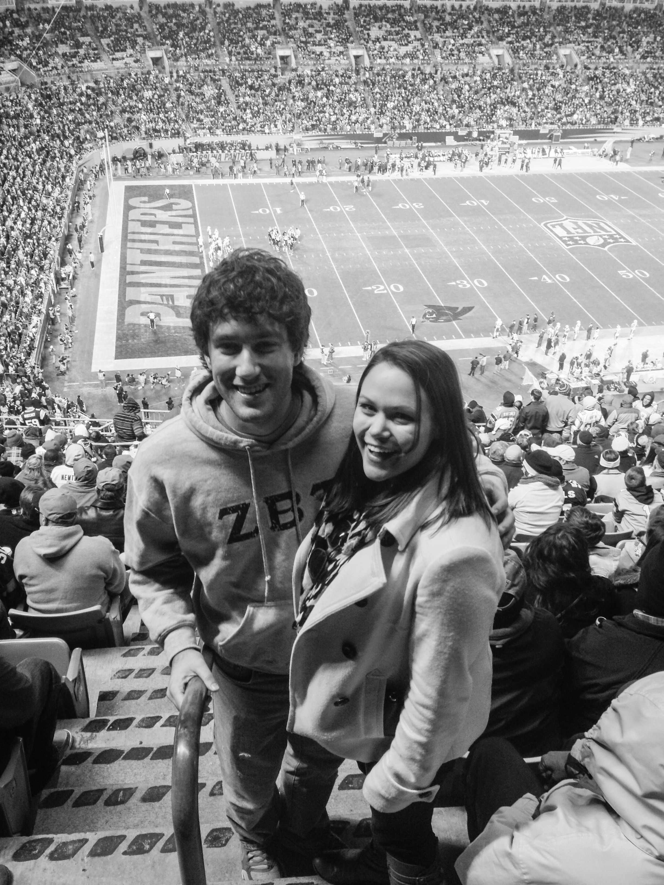
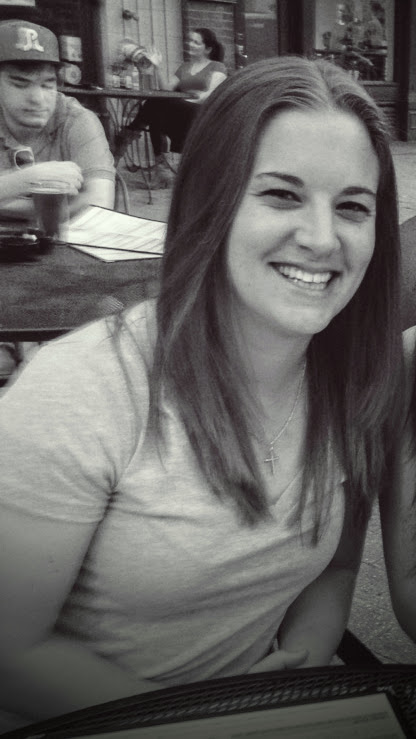
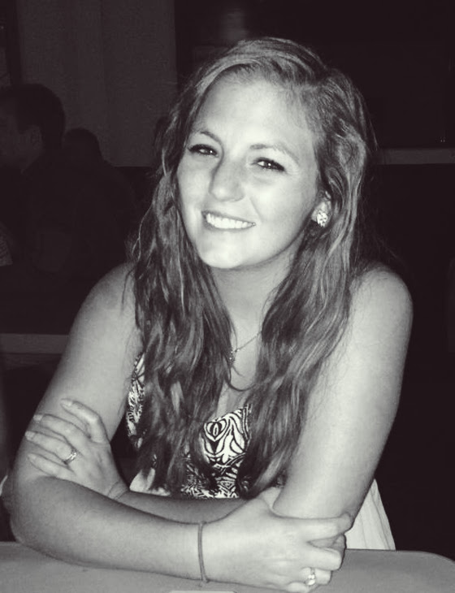
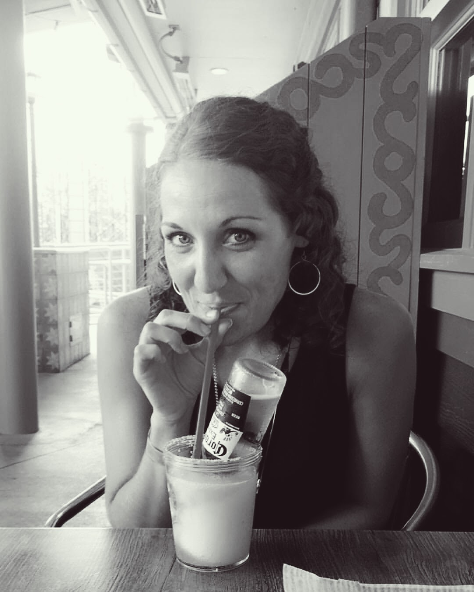
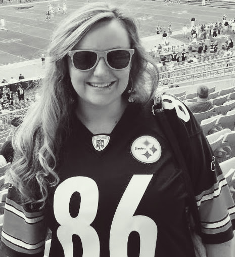
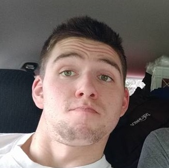
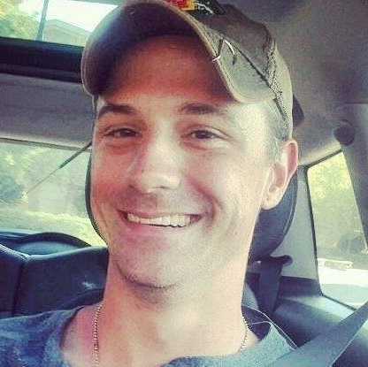
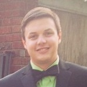

You Had Me AT Aloha
On Friday, June 6th, 2013 John and Jess met through a friend (should out to Shelbs!) one night in Raleigh. It was
by random chance that they ended up meeting (neither of them knew where they were going). But Jess kicked John's ass
in rummy and then because he was the only one still awake treated him to a one-sided discussion of her political views
until 6:30am. When John finally couldn't keep up anymore (he had no idea what he was in store for) he asked for Jess's
number and they talked everyday since.
We Mermaid FOREach Other
Two people couldn't be more opposite. Where John is practical, Jess is an adventurer/impulsive. In each other, we have
found a balance that we didn't know our lives' had been missing. Literally, a balance. John balances the checkbook while
Jess balances John's comfort zone level. He now has gray hairs to prove it!
We are excited to start our lives together and can't wait for you to celebrate with us!
Bridesmaids
Kellie Daughtry
Maid of Honor
My roommate in college and bff kellie jellie is one of my all time favorite people. Sharing a hall with her at Sunchase was the best thing that happened to me in college. She is always down to grab a beer or hang out in the living room and Netflix all day. Lover of canceled plans and reggae music, she knows how to keep it mellow. Don’t let that glamour shot fool you. We were on the moving walkways in the airport and had no idea you were actually supposed to walk on them till granny zoomed on past with her walker. Kellie is the practical one in our friendship. She brings me back down to earth when I get some crazy idea. We talk almost everyday and I can't imagine complaining/gossiping about life to anyone else. Kellie, thanks for agreeing to be my maid of honor. Princess Jess might show up, but I promise I won’t sit down on the floor and cry this time (I think).

ALLY STEPHENSON
Maid of Honor
My oldest friend and the best time I know. 18 years ago, the first thing she ever said to me was “You are going to grow up to be a nerd!” Secretly, I think she stuck around just to prove she was right. Truthfully, our shared competitive spirit and spirit for adventure is what made us fast friends. We played many different sports, dared each other to run through waist high ditches, drove our jet skis really fast, canoed and sank in the tar river, and we may have even picked a few fights with other people(sorry mom). Let’s just say there never was a dull moment growing up with Ally. Lover of the beach, sports, and all things fun she is most likely to challenge you to a wedding drinking contest. Ally has been with me for every important event in my life. I can’t imagine this day without her. Besides I don’t know anyone else that will help me tailgate my own wedding.

KATIE MOORE
Bridesmaid
Cousin aka baby sister. Growing up, Katie and I spent a lot of time together at our grandparents house. On multiple occasions, Katie and I dressed up in Grandma’s aprons and Laurie's hats and performed some dance/singing routine I coordinated and charged my grandparents money to watch. If you have ever heard me sing or seen the home video of my one year that I took dance classes, you would call her a saint. Katie is a gentle, sweet soul that I love very dearly. I’m so excited to have her share my day in May and then help her share hers in June.
KRISSY FRANKS
Bridesmaid
My get crunk sister and a truly kind soul. Our friendship started out a little rocky after Krissy hit me when she was pitching because she thought I liked her boyfriend. Ahh middle school. Good Times. In high school, we became fast friends when we joined the same travel softball team. We spent most of our spring, summer, and fall weekends together out on the ball field. Occasionally, we would find time before practice to ride around RM blaring Lil John. What can I say? We were 16 and badass. Krissy truly is one of the sweetest people I know. When we were co-captains of our softball team senior year, she always had a kind word to say to our teammates after I finished fussing. I am thankful to have a friend like her to stand tall by my side at the altar and then get low with me at the reception.

SHELBY EHMANN
Bridesmaid
College Roommate/Ride or Die. Shelby is always up to try something new and keeps life fun! Thanks for always holding it down with me in the 201. I know initial impressions of me were ify with my themed FB profile picture, but I'm glad you guys choose me to be your rando roomie. I seriously can't imagine having a better time in college than I did with you and Keaze. After all, there aren't that many friends that will drop everything they are doing to help you fight your neighbors because they stole your wreath. Damn you Jarren. There also aren't that many people who will come home from going out and help you cook fried jalapeños. We are in the south, fried food is the foundation of a true friendship. I'm so excited for you to help us celebrate!

TORI WELTY
Bridesmaid
I have labeled her my beer and puppies friend. Why? Because she is always down for a local craft beer and to go somewhere we can bring all of our dogs! Tori is very creative and stands out as a female mechanical engineer. Girl Power! I am so thankful to have met her after moving to Charlotte. She became my female support system in a place where I did not know anyone. Tori dates one of John's closest friends so we often have dinner nights. Let me tell you, Tori can cook one hell of a good meal. She is the real hostess with the mostest. I will be forever grateful that you introduced me to hot pepper jelly and goat cheese crackers. I can’t wait to make some fun wedding memories with you!
Groomsmen
CHRIS WEST
Best Man
I'd like to think my brother looks up to me (even through I literally look up to him). We used
to fight and never get along but after some growing up I'd say we're pretty close. Even if this
isn't true with him, too bad - you're still related to me! This guy lives in Pennsylvania and
enjoys wood-working, working out and all things dogs.

NATE MOYAR
Groomsman
My first friend since we were two. Even though his family moved away, our families always made
it a point to see each other annually. Nate is the most easy-going and friendliest guy you'll
meet. But watch out, he is a beast. He swam in college and has done several triathlons. I heard
he pays rent at the gym as well.
ZACK ANDREWS
Groomsman
I met this guy on the first day of cross country freshmen year in high school. We got into a
bunch of trouble being idiots when we thought we were cool. From doing donuts in the parking
lot to drinking his parent's liquor we managed to survive high scool. Somehow we had the same
first car (98 Saturn SL2) and both went to UNC Charlotte.
JONATHAN PAULL
Groomsman
My first time meeting JP was after I was initiated to ZBT- he handed me a flask of the
cheapest whiskey you could buy and said "drink up pledge". He is the guy that you can call
up anytime asking if you want to grab a beer and he will always be down. Don't worry though,
he's not very good at case races.

BENJAMIN DOUGLAS
Groomsman
Benji is my big brother in ZBT. He helped me when I first joined the fraternity and really
inspired me to step up as a leader. He taught me a lot about respect and how to not give a
shit what others think about you. Just watch out when he drinks, he'll take your stuff and
wait to give it back years later.

LUKE HATLEY
Groomsman
My roommate and running buddy for the majority of college. He taught me how to lose at
poker and what redneck parties are like. Luke is really a smart guy but he hides it well.
Thanks for letting me drive your car to class and not flooding our apartment too many times.
Friday, May 13th, 2017
5:30 PM
Crystal Coast Country Club
152 Oakleaf Dr
Pine Knoll Shores, NC 28512
5:30 PM
Crystal Coast Country Club
152 Oakleaf Dr
Pine Knoll Shores, NC 28512
SEAS THE DAY
Friday, May 12th
6:00 PM
Rehearsal Dinner
Saturday, May 13th
5:30 PM
Wedding Ceremony
6:00-7:00 PM
Cocktail Hour
7:15 PM
Dinner
8:00 PM
Hit the Dance Floor
10:50 PM
Sparkler Send Off
Sunday, May 14th
John and Jess are off to Honeymoon in Ireland !